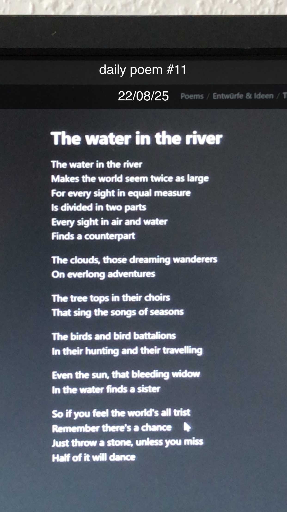

The Water in the River
[11]The water in the river
Makes the world seem twice as large
For every sight in equal measure
Is divided in two parts
Every sight in air and water
Finds a counterpart
The clouds, those dreaming wanderers
On everlong adventures
The tree tops in their choirs
That sing the songs of seasons
The birds and bird battalions
In their hunting and their travelling
Even the sun, that bleeding widow
In the water finds a sister
So if you feel the world's all trist
Remember there's a chance
Just throw a stone, unless you miss
Half of it will dance
